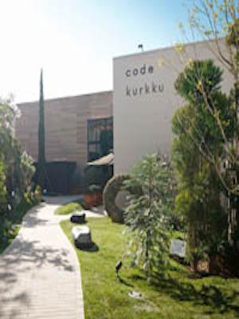

Born in 2011 to a short walk from Yoyogi Station. While stroll hanging out space of about 300 square meters lush green, you can enjoy your shopping and food. Was responsible for the concept Produced by, music producer Takeshi Kobayashi. Including the Italian restaurant owner and chef, Mr. Yasuhiro Sasajima of "Il Giottone" deals with, grocery stores, stylish cafes and relaxation facilities are scattered on site. It seems to be released from the stress just put yourself in a space where plants rich personality to produce a fantastic space.
